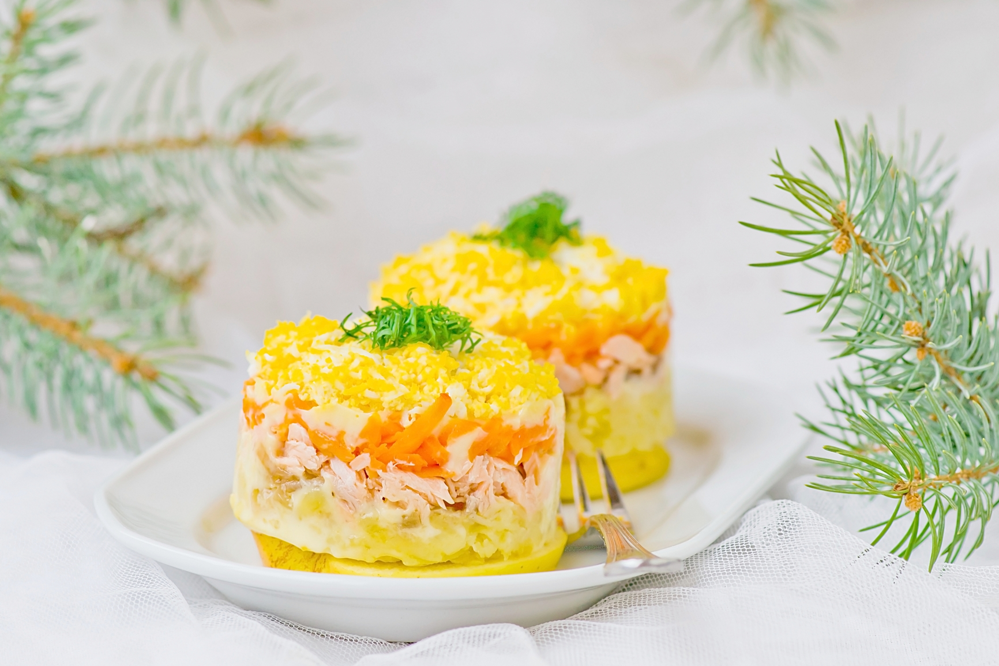
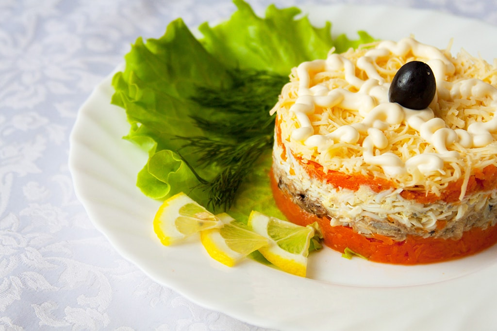

Хит советских застолий, когда красная рыба была дефицитом и появлялась в меню по большим праздникам.
Дефицит давно прошел, но сочетание горбуши, крутого яйца и кислого яблочка так и осталось одним из самых любимых.
Салат Мимоза прост, как букварь, и многообразен, как Вселенная. Откуда он взялся, детально не изучено.
Снобы от кулинарии его презирают, зато все остальные едят с неослабевающим удовольствием.
В любом рецепте Мимозы имеется три обязательных ингредиента, рыба, лук и майонез, и еще один почти обязательный, отварные яйца.
И качеству этих четырех продуктов надо уделять самое большое внимание.
Рыба может быть консервированной, горячего копчения и даже отварная.
Ключевая ее характеристика — нежность, и поэтому самый лучший выбор (по крайней мере, консервов) — сайра.
Лук для салата Мимоза должен быть как можно более сладким — и как можно меньше резать глаза.
Лучший вариант — так называемый салатный лук. Обычный, «злой» лук нужно обязательно обдать горячей водой.
Майонез подходит, в принципе, любой, однако злоупотреблять им не стоит.
Смазывать слои салата майонезом надо очень тонким слоем, чтобы чувствовался вкус других ингредиентов.
Покупая яйца, старайтесь, чтобы у них были как можно более яркие желтки — чтобы салат в самом деле напоминал праздничный букет на 8 Марта.
ИНГРЕДИЕНТЫ
- 5 средних морковок
- 5 средних картофелин
- 5 яиц
- 400 г филе горбуши (или лосося)
- 1 большое зеленое яблоко
- 5 перьев зеленого лука
- маленький пучок укропа
- 250 г майонеза
- лимонный сок
- соль

ПОШАГОВЫЙ РЕЦЕПТ ПРИГОТОВЛЕНИЯ
Шаг 1
Отварите морковь и картофель в кипящей подсоленной воде до готовности. Остудите и очистите. Натрите картофель и морковь на мелкой тёрке.
Шаг 2
Сварите яйца вкрутую. Очистите и разделите на белки и желтки. Белки натрите на тёрке. Желтки раскрошите.
Шаг 3
Филе горбуши отварите на пару, посолите и остудите. Разберите вилкой на мелкие кусочки.
Шаг 4
Очистите яблоки от кожуры и семян и натрите на мелкой тёрке, сбрызните лимонным соком. Мелко нарежьте зелёный лук и укроп.
Шаг 5
На блюдо поставьте разъемное кольцо диаметром 22-25 см, удобно использовать для этой цели разъемную форму для торта. Первым слоем выложите в кольцо половину картофеля, немного посолите и смажьте майонезом. Вторым слоем положите половину рыбы,снова смажьте майонезом. По всей поверхности присыпьте луком и укропом.
Шаг 6
Следующий слой – половина моркови, смажьте майонезом. Повторите слои картофеля, рыбы и моркови, смазывая каждый слой.
Шаг 7
Затем выложите слой яблок, смажьте майонезом. Выложите белки, хорошо смажьте майонезом. Верхний слой салата посыпьте раскрошенными желтками.
Шаг 8
Накройте салат пищевой плёнкой и уберите в холодильник на 2-3 ч. Перед подачей оставьте на 15 мин при комнатной температуре и снимите разъемное кольцо.
